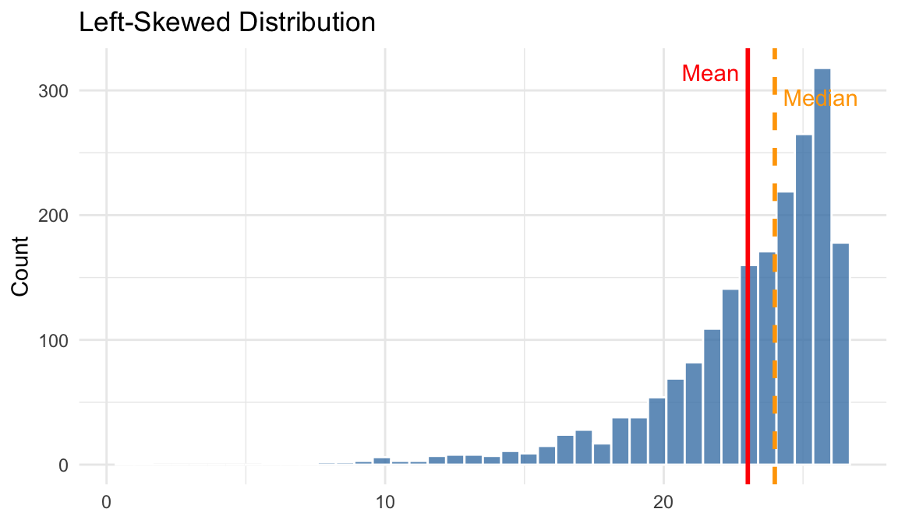
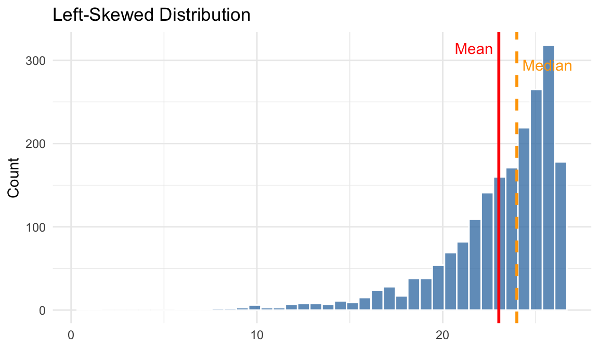
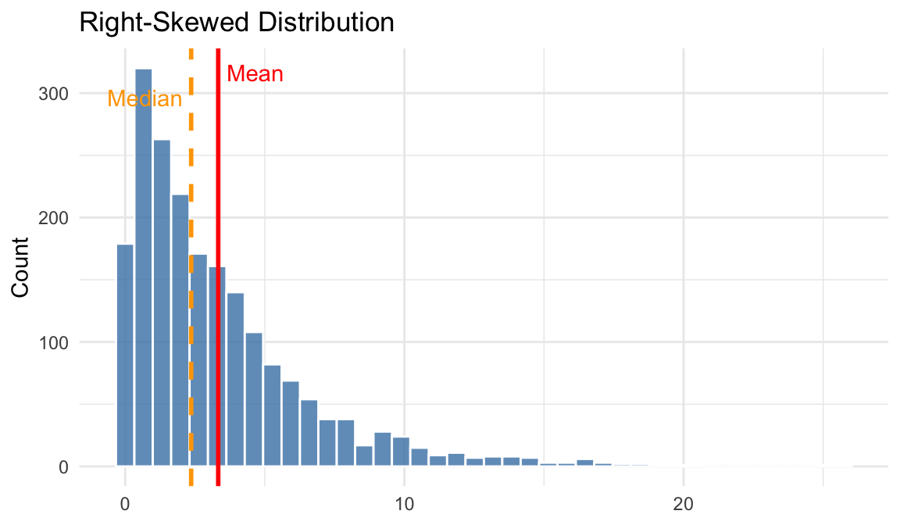
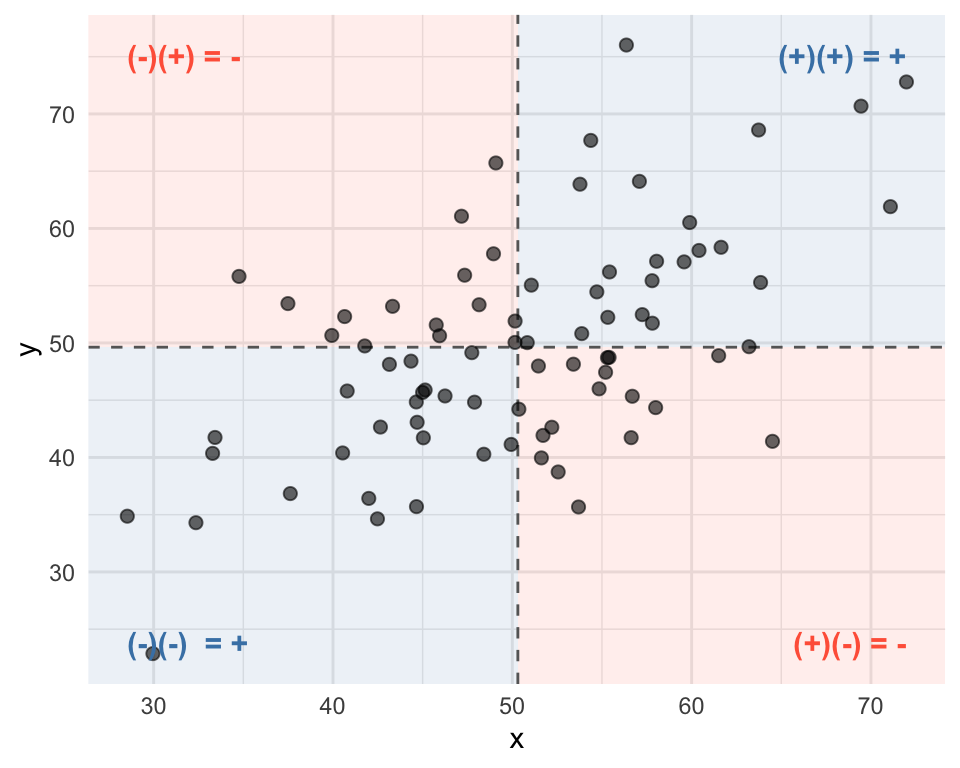
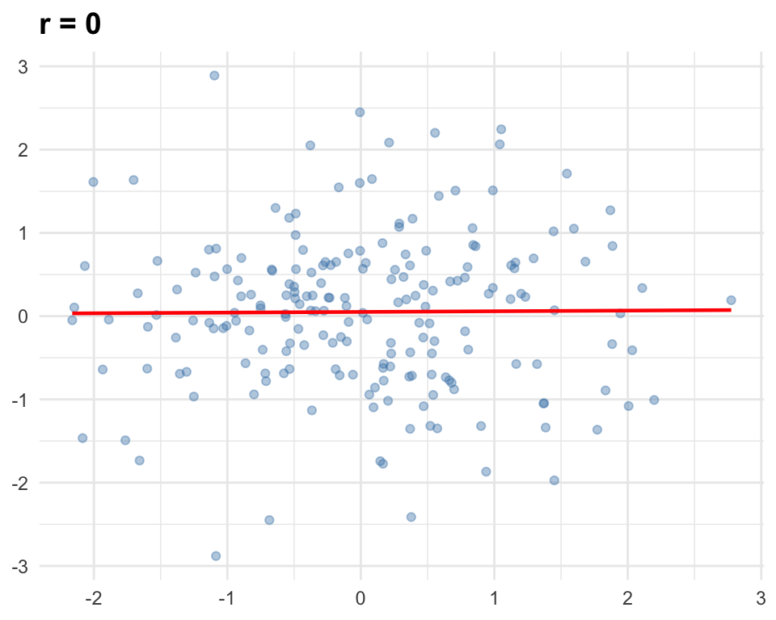
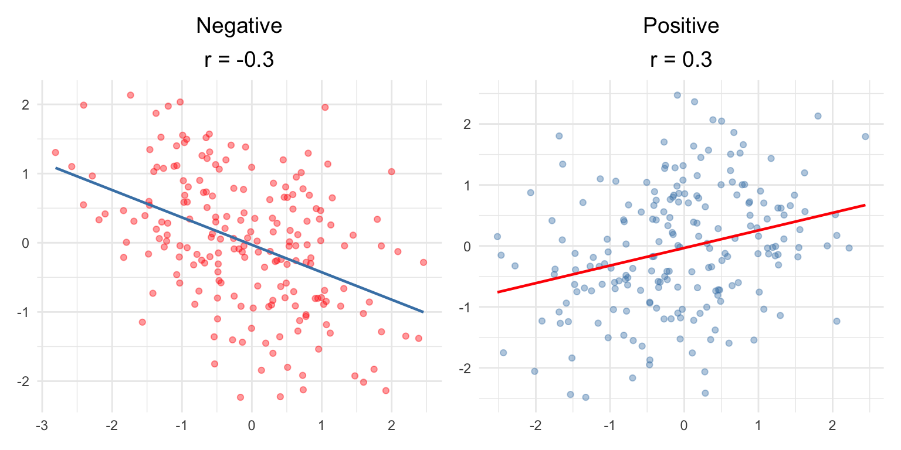
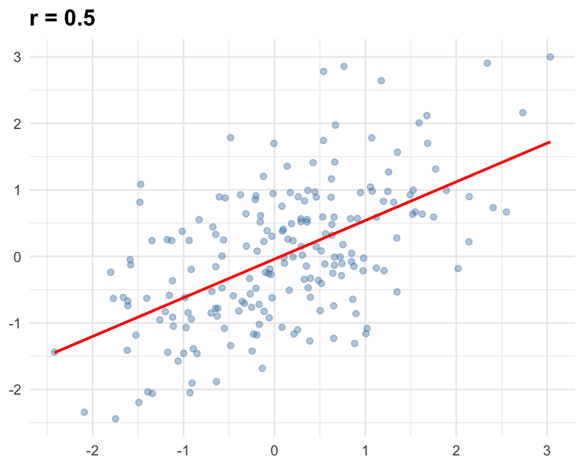
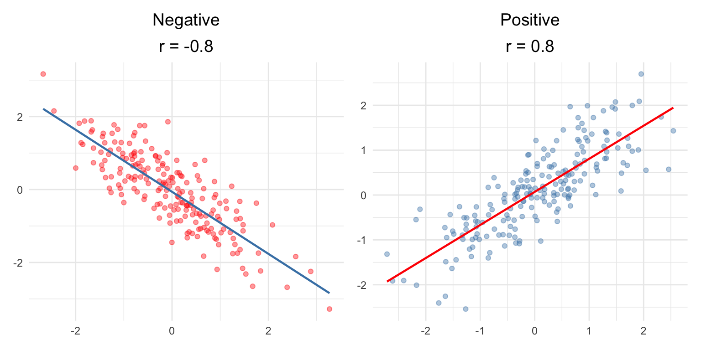

Sociology 106: Quantitative Sociological Methods
February 10, 2026
HW #1: due tonight (Tuesday, February 10) by 11:59 PM – Extended deadline - any questions?
HW #2: due Thursday, February 12, 11:59 PM - Ideal to use your final project data
Paper Proposal (5%): due Thursday, February 26, 11:59 PM - A two-page double-spaced proposal for your final paper. - Here’s an example of what I expect.
Summarizing distributions:
Examples from sociology:
A good research question guides everything else: your data, your variables, and your choice of summary statistics or measures of association.
Relative frequency (aka proportion): the frequency of observations for a given variable, divided by the total number of observations.
Notation:
Relative frequency in the case of two variables:
The marginal (or conditional) proportion is the relative frequency of observations taking a certain value for a given variable (i.e., X), conditional on the observations taking a certain value for another variable (i.e., Y)
Notation:
\(p_{X=i \mid Y=j} = \frac{n_{X=i,\,Y=j}}{n_{Y=j}}\)
Sometimes \(p_{X=i|Y=j}\) is shortened to \(p_{ij}\)
The table below is reconstructed from a published study:
| 18th Century | 19th Century | |
|---|---|---|
| Publishing Trade | 109 | 21 |
| Other Occupations | 53 | 82 |
| Total | 162 | 103 |
Marginal frequency of magazine founders’ occupations being in the publishing trade, conditional on the magazine being founded in the 18th century:
\[109/162 = 67.3\%\]
Marginal frequency of magazine founders’ occupations being in the publishing trade, conditional on the magazine being founded in the 19th century:
\[21/103 = 20.3\%\]
We can also recover the overall relative frequency from the same table — the number of all founders in the publishing trades, divided by all foundings:
\[(109 + 21)/(162 + 103) = 130/265 = 49.1\%\]
Relative frequencies are more useful if both variables are categorical, not continuous
Same for marginal frequencies: more useful if both variables are categorical, not continuous
Now, let’s use R to calculate relative and marginal frequencies
Relative frequency formula : \(p_{X=i} = \frac{n_{X=i}}{n_{total}}\)
Marginal frequency for males. Formula : \(p_{X=i \mid Y=j} = \frac{n_{X=i,\,Y=j}}{n_{Y=j}}\)
# A tibble: 5 × 3
marital n proportion
<chr> <int> <dbl>
1 divorced 165 0.128
2 married 730 0.566
3 never ma 312 0.242
4 separate 34 0.0264
5 widowed 49 0.0380Marginal frequencies for both male and female. Formula : \(p_{X=i \mid Y=j} = \frac{n_{X=i,\,Y=j}}{n_{Y=j}}\)
# A tibble: 11 × 4
# Groups: sex [2]
sex marital n proportion
<chr> <chr> <int> <dbl>
1 female divorced 281 0.165
2 female married 811 0.476
3 female never ma 302 0.177
4 female separate 68 0.0400
5 female widowed 239 0.140
6 female <NA> 1 0.000588
7 male divorced 165 0.128
8 male married 730 0.566
9 male never ma 312 0.242
10 male separate 34 0.0264
11 male widowed 49 0.0380 Mode: the value of a variable that occurs most often in the data set
Median: the middle data value, if the data are ordered by increasing value
(Arithmetic) mean (aka average): the sum of all values in the data set, divided by the number of observations in the data set
\[\bar{x} = \frac{1}{n}\sum_{i=1}^{n}x_i\]
Example data of number of people 10 members of a high school class sent text messages to on Monday: 5, 2, 10, 4, 3, 2, 6, 15, 3, 2
The value that occurs most often:
5, 2, 10, 4, 3, 2, 6, 15, 3, 2 — 2 appears 3 times, more than any other value
Mode = 2
Order the data, then find the middle value(s):
(2, 2, 2, 3, 3, 4, 5, 6, 10, 15)
Two middle observations — find the midpoint: \((3 + 4)/2\) = 3.5
Median = 3.5
Sum all values and divide by \(n\):
(5+2+10+4+3+2+6+15+3+2) / 10 = 5.2
Mean = 5.2
| Measure | Value |
|---|---|
| Mode | 2 |
| Median | 3.5 |
| Mean | 5.2 |
Notice that mode (2) < median (3.5) < mean (5.2) — this is a sign of right skew, produced by the outliers 10 and 15
Relationship between mean, median, and mode tells us about the skew of a distribution:

The mean is pulled toward the long left tail, so it is less than the median.

The mean is pulled toward the long right tail, so it is greater than the median.
| Measurement | Mode | Median | Mean |
|---|---|---|---|
| Nominal | Yes | No | No |
| Ordinal | Yes | Yes | No |
| Continuous | Yes | Yes | Yes |
These measures are simple to calculate in R. Let’s take a look:
To calculate the mean respondent income in our sample, we can use the summarize() or summarise() function. Be sure to remove missing using na.rm = TRUE, which can affect the calculation.
We can do the same for the median using the median() function:
For the mode, we’ll simply want to count the number of obs (using count()) and take the largest number. We can do the following to see the most common marital status, which is unsurprisingly “married”.
Percentiles: the \(k\)th percentile of the variable is the value that has the property that at least \(k\) percent of the data are less than or equal to it
Deviation from the mean: the difference between a data value and the sample mean
Sample variance: the average squared deviations
Sample standard deviation: the square root of the sample variance
Percentiles: the \(k\)th percentile of the variable is the value that has the property that at least k percent of the data are less than or equal to it
Calculating the \(k\)th percentile:
Example: calculating the 30th and 45th percentile of: (5, 2, 10, 4, 3, 2, 6, 15, 3, 2)
Step 1 — Order the data: (2, 2, 2, 3, 3, 4, 5, 6, 10, 15)
Step 2 — Calculate the index: \(30 \times 10/100 = 3\)
Step 3 — Index is a whole number, so average the 3rd and 4th values:
\[(2 + 3)/2 = \mathbf{2.5}\]
Step 2 — Calculate the index: \(45 \times 10/100 = 4.5\)
Step 3 — Index is not a whole number, so round up to 5 and take the 5th value:
\[\mathbf{3}\]
Deviation from the mean: for observation \(i\), the deviation is \(x_i - \bar{x}\)
Sample variance: the average* squared deviations
\[s^2 = \frac{1}{n-1}\sum_{i=1}^{n}(x_i - \bar{x})^2\]
Sample standard deviation: the square root of the variance
\[s = \sqrt{\frac{1}{n-1}\sum_{i=1}^{n}(x_i - \bar{x})^2}\]
Note
These “averages” are divided by \(n-1\), not \(n\).
Why do we square the deviations?
Unsatisfying answer: most of the statistical tools we will learn in the rest of the course are based on the standard deviation and variance, and these are the most commonly used measures of dispersion
The tradeoff is similar to medians vs. means:
| Statistic | Nominal | Ordinal | Continuous |
|---|---|---|---|
| Percentiles | No | Yes | Yes |
| Variance / SD | No | No | Yes |
How do we use R to calculate measures of dispersion? Let’s look at various measures of dispersion of respondents’ income in our attain dataset.
This will return the values at those specific percentiles–25th, 50th, and 75th. So, a respondent with an income of $32,500 is in the 75th percentile of the sample.
This will return the measure of variance in our sample for this specific income variable.
This will return the standard deviation (std_dev) of variance in our sample for this specific income variable.
we can calculate all of these measures simultaneously. We can also calculate sd manually if we’d like.
Here I use the gt package to make the table output a bit nicer. Check out the documentation!
Difference in proportions
\(p_{x_i | y_j} - p_{x_i | y_k}\)
Relative risk ratio
\(p_{x_i | y_j} / p_{x_i | y_k}\)
Tip
There is a big difference between “percentage point increase” and “percent increase.”
| 18th Century | 19th Century | |
|---|---|---|
| Publishing Trade | 109 | 21 |
| Other Occupations | 53 | 82 |
| Total | 162 | 103 |
Difference in proportions of a magazine founder being in the publishing trade (x) in the 18th as compared to the 19th century (y):
\[109/162 - 21/103 = 67.3\% - 20.3\% = 47 \text{ percentage points}\]
This is an absolute difference—it tells you the raw gap between the two proportions.
“67.3% of 18th century founders were in publishing compared to 20.3% in the 19th century—a difference of 47 percentage points.”
Relative risk ratio of a magazine founder being in the publishing trade (x) in the 18th as compared to the 19th century (y):
\[(109/162)/(21/103) = 67.3\%/20.3\% = 3.32\]
This is a relative difference—how many times larger one proportion is than another.
“Magazine founders in the 18th century were 3.32 times as likely (or 232% more likely) to be in the publishing trade compared to those in the 19th century.”
Absolute difference (47 pp)
Better for practical/real-world impact.
Nearly 1/2 of 18th century founders were publishers vs. only 1/5 in the 19th century.
Relative risk (3.32x)
Better for the strength of the association.
18th century founders were over 3 times as likely to be a publisher.
Covariance measures how two variables vary together. A positive means they move in the same direction; a negative means they move in opposite directions.
The covariance for \(n\) observations on two variables \(x\) and \(y\) is equal to:
\[cov(x,y) = \frac{1}{n-1}\sum_{i=1}^{n}(x_i - \bar{x})(y_i - \bar{y})\]
The term \((x_i - \bar{x})(y_i - \bar{y})\) is:

Correlation is a standardized measure of the linear association between two variables. Like covariance, it captures the direction of the relationship, but it also allows us to compare the strength across different variable pairs.
The correlation coefficient \(r\) for \(n\) observations on two variables x and y with sample standard deviations \(s_x\) and \(s_y\) is equal to:
\[r_{xy} = \frac{cov(x,y)}{s_x \times s_y}\]
Note
Covariance vs. correlation: Covariance tells you the direction of a relationship but its magnitude depends on the scale of the variables (dollars, years, etc.). Correlation standardizes covariance by dividing by the standard deviations, producing a unit-free measure that always falls between -1 and 1.

Weak: |r| = 0.10 to 0.39

Moderate: |r| = 0.40 to 0.69

Strong: |r| ≥ 0.70

| Nominal | Ordinal | Continuous | |
|---|---|---|---|
| Nominal | Difference in proportions; relative risk ratio | Difference in proportions; relative risk ratio | Difference in means between groups |
| Ordinal | Difference in means between groups | ||
| Continuous | Covariance, (Pearson’s) correlation coefficient |
Step 1: Build marginal frequency tables
Let’s build a marginal freq table for bachelor’s degree and less than college
# A tibble: 5 × 3
marital n prop
<chr> <int> <dbl>
1 divorced 79 0.159
2 married 287 0.579
3 never ma 104 0.210
4 separate 7 0.0141
5 widowed 19 0.0383# A tibble: 5 × 3
marital n prop
<chr> <int> <dbl>
1 divorced 71 0.140
2 married 212 0.418
3 never ma 99 0.195
4 separate 21 0.0414
5 widowed 104 0.205 Step 2: Difference in proportions (married)
Now let’s take the difference in those proportions of those that are married. How do we interpret this?
[1] 0.1604831Step 3: Relative risk ratio (married)
Finally let’s calculate the relative risk ratio of those that are married. How do we interpret this?
[1] 1.383797Let’s calulate the covariance of a respondent’s income and their household income. How do we interpret this?
Rows: 1
Columns: 1
$ covariance <dbl> 376447249Now let’s calulate the correlation. How do we interpret this?
# A tibble: 1 × 1
correlation
<dbl>
1 0.671You’ll answer some questions based on lecture today. You will not need your own data for this but will use the attain data.
HW #3: due Thursday, February 19 at 11:59 PM
Let’s practice using the summary statistics we learned today:
lab2.qmd from bCourse under “assignments” > “Lab #2”lab2.qmd in your labs folder. Your folder structure should now look like this:soc106/
├── _quarto.yml
├── data/
│ └── attain.csv
├── assignments/
│ └── hw1.qmd
│ └── hw2.qmd
│ └── hw3.qmd
└── labs/
└── lab1.qmd
└── lab2.qmdExplorer button on the left to find and open lab2.qmd